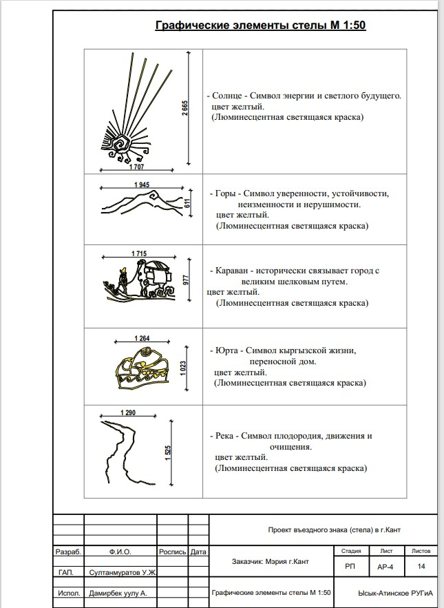

Стела
Стела в г.Кант
Каждый год облик городов меняется в лучшую сторону. Так и в этом году мэрия г.Кант кроме благоустройства планирует дополнить въездным знаком (стелой).
Участком для строительства въездного знака (стела) является придорожная территория автодороги Бишкек-Торугарт с западной и восточной стороны г.Кант.
Въездной знак (стела) высотой 9,5м. в плане имеет прямоугольную форму, с общими размерами в осях 1,0х2,0 метров.


Наружная отделка -выполнена из травертина толщ. 20мм с узорами в национальном стиле с последующей окраской узоров люминесцентной светящейся цветной краской см. лист (графические элементы стелы) :
>
Предусматривается устройство светящихся букв и логотипа города из цветных лайтбоксов, в ночное время:
 >
>
Проектом предусмотрено дальнейшее благоустройство прилегающей территории вокруг въездного знака (стела).
Конструкция въездного знака (стела) запроектированы из металлического каркаса с обшивкой из травертина с гравировкой узоров в национальном стиле.
Фундамент столбчатый, монолитный из бетона класса В25 F150 с закладными деталями под металлические стойки и элементы каркаса.
Проект выполнен в соответствии с действующими нормами и правилами в сфере архитектуры и строительства КР.